|
|
| green seaweeds text index | photo index |
| Seaweeds > Division Chlorophyta > Family Caulerpaceae > genus Caulerpa |
| Big
parasol green seaweed Caulerpa peltata* Family Caulerpaceae updated Oct 2016 Where seen? This green seaweed with small fleshy 'umbrellas' is commonly seen on some of our shores, growing on coral rubble near reefs. Features: The seaweed has structures that look like fleshy umbrellas; with a thick circular portion (about 1-1.5cm across) on a little stalk. These little umbrellas emerge along the length of a 'horizontal root' that creeps over the surface. Some form loose clusters. Bright yellow-green to bluish-green. On the reefs of our Southern Islands, a similar seaweed with much smaller 'parasols' is often seen. Sometimes confused with similar green seaweeds. Here's more on how to tell apart some green seaweeds. Human uses: It is eaten in some places and used as medicine for its antifungal properties and ability to lower blood pressure. |
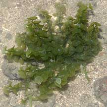 Beting Bronok, Jul 07 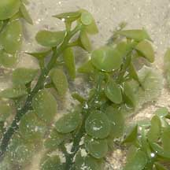 Loose clusters. |
|
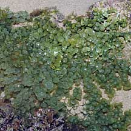 Pulau Hantu, Jun 10 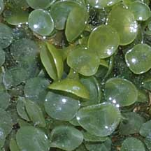 |
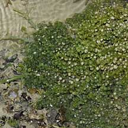 Pulau Semakau, Jan 09 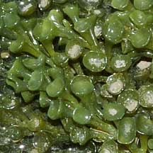 |
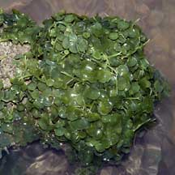 Tuas, Jun 05 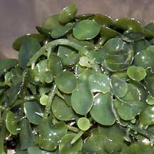 |
*Species are difficult to positively identify without close examination of internal parts.
On this website, they are grouped by external features for convenience of display.
| Big parasol green seaweeds on Singapore shores |
| Photos of Big parasol green seaweeds for free download from wildsingapore flickr |
| Distribution in Singapore on this wildsingapore flickr map |
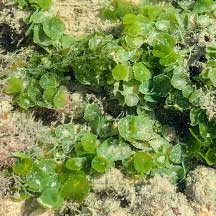 Terumbu Pempang Tengah, May 21 Photo shared by Vincent Choo on facebook. |
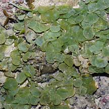 Pulau Senang, Aug 10 |
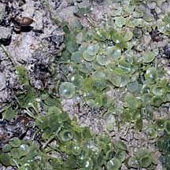 Pulau Salu, Aug 10 |
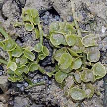 Terumbu Berkas, Jan 10 |
Links
|